Appearance
演示视频地址: https://www.bilibili.com/video/BV1nh41177Rv/
项目源代码地址: https://gitee.com/tiantian17/yingke-blog (有写的不好的地方 请多多指正)
应科博客项目报告🎉
项目目的及其意义
1.提升写作能力
我们计算机作为工科专业中的王牌，自然大家的写作能力也很是一般的。不过，写作能力在以后的工作中是很重要。这是已工作的朋友告知的，在以后的工作中，我们需要写汇报，各种报告以及设计文档等等，这些看似不重要的东西，确实是抓住上级的关键点，关乎你以后的晋升。而平时，我们在这方面的练习几乎又是没有的，所以说写博客，是提升学生写作能力的一个绝佳的途径。而在应科博客中你可以自由发挥，Dambisa Moyo曾说过:"种一棵树最好的时间是十年前，其次是现在"，如果你还不会写博客，还不会markdown语法。那么来应科博客就对了，网站支持图文展示，支持markdown所有语法，markdown语法在线学习。
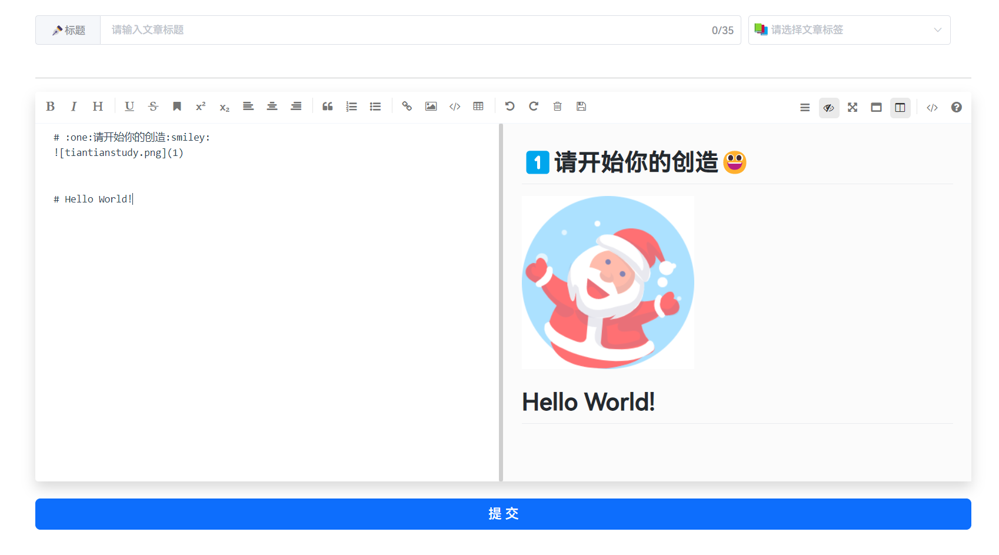2.总结错误
没有bug的人生是不完美的人生。我们在码代码的过程中，难免会遇到很多的问题，通过我们努力了很久解决的问题，如果不做记录的话，可能下次遇到的时候，你还是一脸懵逼（深有体会），所以总结你平时遇到的问题也是写博客的一个很不错的方向，这样的话，你可以在下次遇到同样问题时候，可以很快解决。当然了，还可以帮助他人解决同样的问题。何乐而不为呢？
3.记录学习
作为学生，要想变成一个技术大佬，自然是需要不断学习，那这就成为了一个非常不错的写作素材。在我们进行系统学习的过程中，我们可以把我们学习的内容，分成不同的点，然后总结一下，发布到应科博客中。一方面有助于后面自己的复习，另外一方面可以给他人的学习提供一个很好的参考。
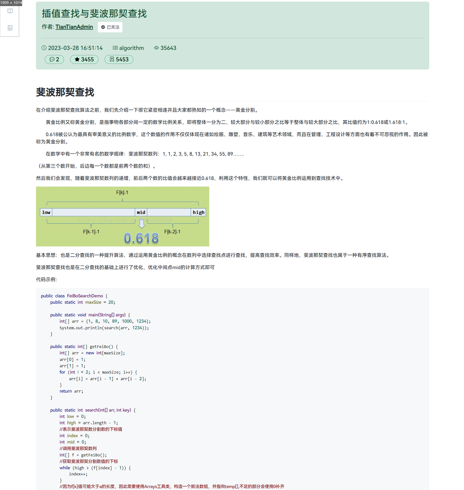4.为简历加分
毕竟我们最终还是要走向工作的，这免不了的就是我们的简历，如果我们能够在简历上写上我们的博客链接，这将会是一个非常好的展示我们自己的机会。毕竟面试的时间是有限的，面试官总有些东西是问不到的，那么他就会去看一下你的博客链接，了解下你的学习经历，看看你学过哪些知识（已工作的人告诉我的）。
5.帮助他人
计算机追求的是开源，是分享。在我们学生时代，开源的项目能做出来的应该是极少数，那我们也可以通过分享的形式来帮助他人，毕竟总有人在路上，我们走过的路都能成为别人避免弯路，学习的途径。应科博客面向广应科计算机学院师生，在计算机学院中，我们的人才培养方案大同小异，教学内容基本一致，而遇到的问题也不会相差太多，在应科博客中就具有很强的针对性，我们可以将自己的报错解决方案提交到应科博客中，供广大计院学生参考。
6.分享生活趣事，扩展人脉
古话说得好：一个人走的更快，但一群人走的更远！这句话放在我们学生阶段是再合适不过了，此时的我们未经世事，资历尚浅，如果能有前辈能给我们指点一二，那我们会避免很多的弯路。同时应科博客不止有学习，我们也可以分享一些生活趣事。据我所知，广应科还没有属于自己的论坛，学生相互认识只能通过学校活动和社团或协会活动，毕竟参加人数有限制，而在应科博客中我们可以通过评论和关注来结交广大朋友。学生可点击用户头像跳转到用户个人信息，且学生可自由填写个人信息，可到线下认识或深入交流学习。
7.提升做题能力
想要巩固基础，查漏补缺，刷题肯定是你最好的选择，在应科博客中提供了每日刷题功能，题目不多不少，难度适中，能让同学们保持学习状态。在刷题过后，应科博客提供完整的答案解析，能让同学我们认识到自己的不足，加以改正。且我们在找工作的时候肯定离不开笔试，在每日刷题中，我们能形成自己的解题节奏，在笔试中脱颖而出。
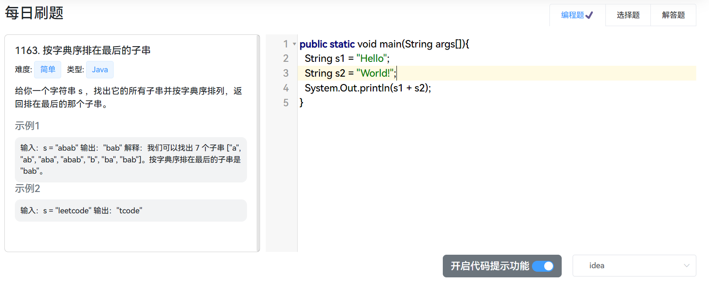项目介绍
应科博客 是一个由JavaEE开发的博客系统，基于经典主流技术组合（SpringBoot、Sa-token、MyBatis、Jwt、Vue），内置模块如下:
登录注册、每日刷题、书写文章、博客管理、动态博客分类、博客发布、用户评论、权限校验、个人信息管理、定时任务、视频播放等。
一.项目架构
1.技术栈介绍
(1)后端
- SpringBoot2: 后端服务开发框架
- MyBatis: 数据库交互与管理
- MySQL: 关系型数据库存储数据
- Druid: 数据库连接池
- Redis: 数据缓存和业务逻辑实现
- Sa-token: 身份与权限管理(最新国产开源安全框架)
- JWT: 前后端分离令牌
- AES: 对称加密算法
- PageHelper: 数据分页查询
- Boot-mail: 发送QQ邮件
- Hutool: Java工具包
- OSS: 阿里云OSS存储
- Lombok: 自动插入编辑器并构建工具
- Jackson: JavaJSON解析器
(2)前端
- Vue2: 前端服务开发框架
- VueX: 数据持久化
- VueRouter: 路由
- Axios: 异步通信
- Element-ui+Bootstrap: 前端样式/组件
- 其他第三方插件:
- mavon-editor(构建markdown编辑器)
- marked(markdown转html)
- highlight.js(代码高亮)
- nprogress(进度条)
- animate.css(动画库)
- vue-aplayer(视频播放器)
- echarts(数据可视化框架)
- codemirror(带提示功能的代码编辑器)
2.运行环境
开发工具:
- IDEA2022.3.1(后端)
- WebStorm2022.3.1(前端)
- Navicat16(操作MySQL)
- RESP(操作Redis)
服务开发版本:
- SpringBoot 2.7.9
- 其他相关依赖版本如图:
- Maven 3.8.1
- Vue 2.6.14
- Node 16.18.1
- mysql 8.30
- Redis 7.0
3.架构设计与分析
整个项目采用主流的前后端分离项目架构，后端使用SpringBoot开发，前端使用Vue开发。项目的用例设计思路如下：
基本用例：博客列表展示、博客详情展示、博客搜索、博客分类列表展示、友链展示、关于我展示、登陆/注册、展示/修改个人信息、我的博客列表管理、我的资源列表管理、他人空间展示（信息、博客、学习记录）、博客留言模块、博客编辑/发表、学习情况编辑/发表、退出/注销。 权限等级：admin>teacher>user admin：拥有博客系统的所有权限，可以登陆后台管理系统，admin权限不存在注册渠道。 teacher：拥有上传题目、题目修改、题目评分、博客浏览、资源浏览、博客发布、评论权限 user：拥有博客浏览、资源浏览、博客发布、资源发布、资源浏览、评论权限，用户在注册时默认为user权限。
二.本地环境部署说明
1.下载
代码下载
前往Gitee下载页面https://gitee.com/tiantian17/yingke-blog下载解压到工作目录
2.修改必要配置
2.1.数据源配置
yml
spring:
datasource:
type: com.alibaba.druid.pool.DruidDataSource
driver-class-name: com.mysql.cj.jdbc.Driver
url: 数据库地址
username: 数据库账号
password: 数据库密码
2.2.Redis配置
yml
redis:
host: Redis的地址
port: Redis的端口
# password: 有设置密码就写
database: 0 # 默认使用0号数据库 共16个
timeout: 10s
lettuce:
pool:
# 连接池最大连接数
max-active: 200
# 连接池最大阻塞等待时间（使用负值表示没有限制）
max-wait: -1ms
# 连接池中的最大空闲连接
max-idle: 10
# 连接池中的最小空闲连接
min-idle: 0
cache:
redis:
time-to-live: 180000 # 毫秒 如果不设置就是永久缓存
2.3.邮件配置 => 主要发送验证码邮件(若没有可以直接用我的账号和密码, 按照3.13中申请即可)
yml
mail:
host: smtp.qq.com
username: 你的邮箱账号 # 1979214069@qq.com
password: 你申请到的密钥 # xmxalekbbfmvihiD
default-encoding: utf-8
properties:
mail:
smtp:
auth: true
starttls:
enable: true
required: true
2.4.其他非必要配置
yml
sa-token:
# token名称 (同时也是cookie名称)
token-name: TTtoken
# token有效期，单位s 默认30天, -1代表永不过期
timeout: 2592000 # 30天
# token临时有效期 (指定时间内无操作就视为token过期) 单位: 秒
activity-timeout: -1
# 是否允许同一账号并发登录 (为true时允许一起登录, 为false时新登录挤掉旧登录)
is-concurrent: true
# 在多人登录同一账号时，是否共用一个token (为true时所有登录共用一个token, 为false时每次登录新建一个token)
is-share: true
# token风格
token-style: jwt
# 是否输出操作日志
is-log: true
# jwt秘钥
jwt-secret-key: SGSIDNgdsgisdgdfinnnsdfsd
tiantianstudy:
# 本地图片的保存的地址 => 默认为 D:/imgs/ (会自动创建)
path: D:/imgs/
# 用登录注册时ASE加密算法的key 解密时用的也是这个
password-key: HovJ2n2sqkNXEio6Ji0QQJAFLW1Kt80qypMqot+mHhS+0KfdOpaKeMWMSR4Ij5VfE63WzETEeWAMQESxzhavN1WOTb3/p6icgcVbgPQBaWhGg==
3.后端运行
1、导入到idea，菜单 File -> Import，然后选择 Maven -> Existing Maven Projects，点击 Next> 按钮，选择工作目录，然后点击 Finish 按钮，即可成功导入。idea会自动加载Maven依赖包 详细:https://blog.csdn.net/Golovin/article/details/100156311 2、创建数据库yingkeblog并执行脚本yingkeBlog.sql生成对应的结构和数据 3、打开项目运行com.tiantian.TiantTianStudyApplication.java，出现如下图表示启动成功。
4.前端运行
bash
# 1.进入项目目录
cd yingkeBlog-ui
# 2.安装依赖
npm install
# 3.启动项目
npm run server
4、打开浏览器，输入：http://localhost 默认账户/密码 1979214069@qq.com/123456） 若能正确展示登录页面，并能成功登录，菜单及页面展示正常，则表明环境搭建成功
三.文件结构
3.1.后端结构
tex
├─tiantianstudy-admin // 后台管理: 主要负责题目评分,博客,评论和个人信息的审核(但目前还在制作中)
│ └─src
│ ├─main
│ │ ├─java
│ │ │ └─com
│ │ │ └─tiantian
│ │ └─resources
│ └─test
│ └─java
└─tiantianstudy-common // 核心模块
├─src
│ ├─main
│ │ ├─java
│ │ │ └─com
│ │ │ └─tiantian
│ │ │ ├─config // 全局配置
│ │ │ ├─constants // 常用常量
│ │ │ ├─controller // 接口层: 用户访问请求时对接
│ │ │ │ └─visualization // 数据可视化相关接口
│ │ │ ├─dto // 数据传输对象: 前端要什么就给什么
│ │ │ ├─exception // 全局异常处理器
│ │ │ ├─handler // 处理器映射器
│ │ │ ├─mapper // dao层接口
│ │ │ ├─pojo // 实体类: 用于封装数据返回接口层
│ │ │ ├─service // 业务层接口
│ │ │ │ └─impl // 业务层实现类: 处理复杂业务(若业务简单可直接省略这层)
│ │ │ ├─task // 定时任务
│ │ │ └─utils // 常用工具类的封装
│ │ │ └─vo // 多表查询时封装的数据
│ │ └─resources
│ │ └─mapper // sql映射文件
3.2.前端结构
tex
├── public // 公共文件
│ ├── favicon.ico // favicon图标
│ └── index.html // html模板
├── src // 源代码
│ ├── api // 所有请求
│ ├── assets // 主题 字体等静态资源
│ ├── components // 全局公用组件
│ ├── plugins // 插件
│ ├── mook // 使用json-server模拟的数据(可删)
│ ├── router // 路由
│ ├── store // 全局store管理
│ ├── utils // 全局公用方法
│ ├── pages // view
│ ├── App.vue // 入口页面
│ ├── main.js // 入口 加载组件 初始化等
详细设计
1.前端设计
字体: 使用华为鸿蒙开源的
HarmonyOS Sans字体logo: 使用了DesignEvo在线设计
图标及其插画: 使用了阿里巴巴矢量图标库
iconfont组件库: 大量使用了饿了吗团队开发的
Element UI组件库以此达到快速开发的目的样式框架: 使用Twitter开源的
bootstrap5
整体页面设计
配色如下
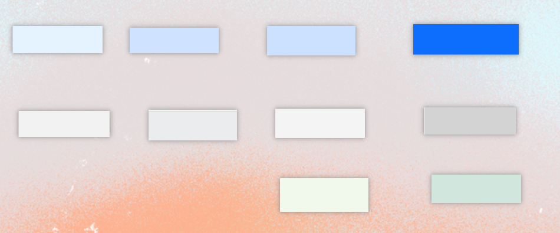从左到右: #ecf5ff #88b8ff #0d6efd #ebeced #d3d3d4 #d1e7dd #cfe2ff #ffffff #f0f9eb #f4f4f5
1.1.对axios的二次封装
java
import axios from 'axios'
import NProgress from 'nprogress';
import 'nprogress/nprogress.css';
import {Message} from 'element-ui'
const instance = axios.create({
// 请求基本地址
baseURL: 'http://localhost',
// 超时时间
timeout: 4000,
})
// 请求拦截器
instance.interceptors.request.use((config) => {
// 发送请求进度条开始
NProgress.start()
const token = localStorage.getItem("TTtoken")
// 每次发送请求时 都带上TTtoken这个请求头给后端进行认证和解析jwt获取数据
token ? config.headers["TTtoken"] = token : null;
return config;
}, function (error) {
Message.error("请求错误")
return Promise.reject(error);
});
// 响应拦截器
instance.interceptors.response.use((response) => {
// 响应后进度条结束
NProgress.done();
return response;
}, function (error) {
Message.error("响应错误")
return Promise.reject(error);
});
export default instance
在api的封装 部分api展示api/blogApi.js
js
export function deleteBlogByLoginUser(blogId) {
return request({
method: 'delete',
url: `/blog/delete/${blogId}`
})
}
export function getBlogLabelCount() {
return request({
method: 'GET',
url: '/count/label'
})
}
1.2.路由配置
1.总览
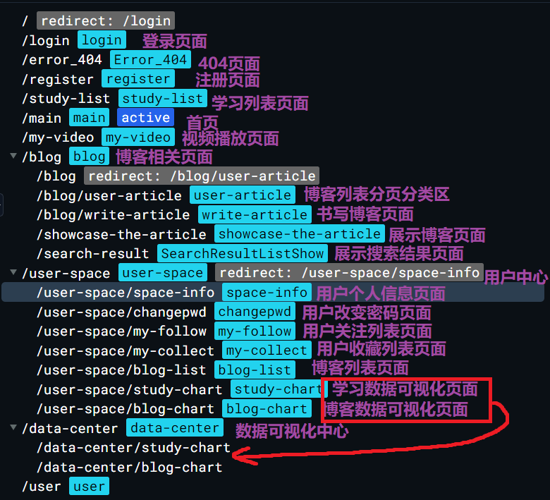2.部分路由配置
在路由元信息中配置title用于给document.title赋值 提高用户体验感
在路由元信息中配置requireAuth表示需要权限才能跳转到这个路由
js
{
path: '/user-space',
name: 'user-space',
component: () => import('@/pages/person/space/UserSpace.vue'),
redirect: '/user-space/space-info',
meta: {title: '应科博客 | 个人中心', requireAuth: true}, //是否需要登录才能访问: true
children: [
{
path: "/user-space/space-info",
name: "space-info",
component: () => import('@/pages/person/UserInfo/SpaceInfo.vue'),
meta: {title: '应科博客 | 个人中心', requireAuth: true}
},
{
path: '/user-space/changepwd',
name: 'changepwd',
component: () => import('@/pages/person/ChangePassword/ChangePwd.vue'),
meta: {title: '应科博客 | 个人中心', requireAuth: true}
},
{
path: '/user-space/my-follow',
name: 'my-follow',
component: () => import('@/pages/person/UserInfo/MyFollow.vue'),
meta: {title: '应科博客 | 我的关注', requireAuth: true}
},
{
path: '/user-space/my-collect',
name: 'my-collect',
component: () => import('@/pages/person/UserInfo/MyCollect.vue'),
meta: {title: '应科博客 | 我的收藏', requireAuth: true}
},
{
path: "/user-space/blog-list",
name: "blog-list",
component: () => import("@/pages/person/UserInfo/BlogList.vue"),
meta: {title: '应科博客 | 博客管理', requireAuth: true}
},
{
path: '/user-space/study-chart',
name: 'study-chart',
component: () => import('@/pages/DataVisualizationCenter/StudyChart.vue'),
meta: {title: '应科博客 | 学习可视化', requireAuth: true}
},
{
path: '/user-space/blog-chart',
name: 'blog-chart',
component: () => import('@/pages/DataVisualizationCenter/BlogChart.vue'),
meta: {title: '应科博客 | 博客可视化中心', requireAuth: true}
}
]
},
3.路由守卫相关配置
js
import { Message } from 'element-ui';
// 前置路由守卫
router.beforeEach((to, from, next) => {
NProgress.start()
// 判断页面是否为需要登录才能访问的页面
if (to.meta.requireAuth) {
//判断token是否存在
if (localStorage.getItem("TTtoken") !== null) {
// 存在直接放行
next();
} else {
// 不存在跳转到登录页面
Message.warning("无权操作 请先登录 !")
next({path: '/login'});
}
} else {
next();
}
})
// 后置路由守卫 => 路由切换之后被调用
router.afterEach((to) => {
NProgress.done()
// 修改标签页标题信息
document.title = to.meta.title || "应科博客"
})
当未登录时 直接访问用户个人信息界面(requireAuth为true时)
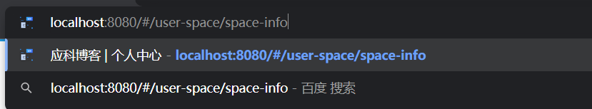会自动跳转的登录页面
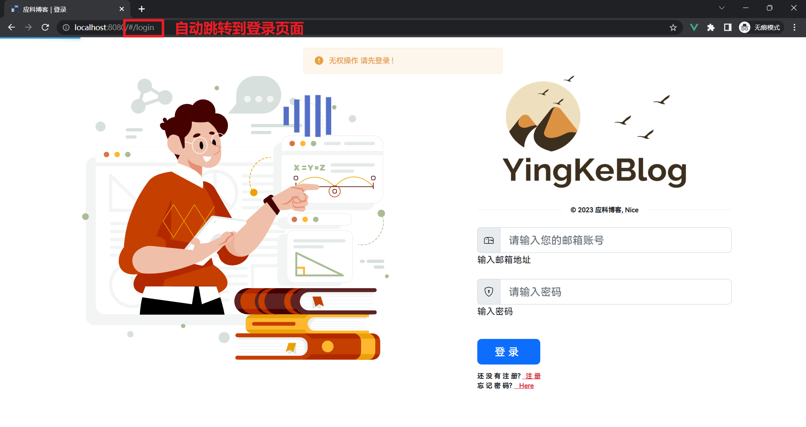插件集成
1.mavon-editor
一款基于vue的markdown编辑器, 详细配置教程, 支持markdown所有语法, 内置快捷键, 图片上传, 实时预览等功能 简单易用快速上手
mavon-editor整体样式和功能列表如图
前面说到在应科博客中, 能学习到markdown的语法, 这个功能就是由mavon-editor提供的, 在mavon-editor左上角提供了markdown语法帮助
按钮, 当忘记的时候, 可以点击按钮查看文档, 相信实践过几次你就能精通啦!
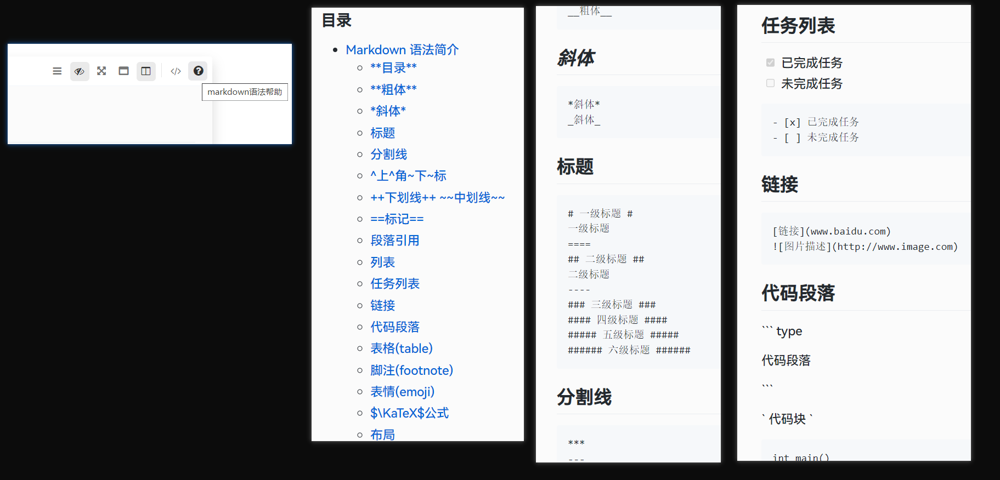editor组件(可直接复用)
vue
<mavon-editor
v-model="article.context"
ref="md"
@change="change"
class="my-editor"
/>
<script>
import {mavonEditor} from 'mavon-editor';
export default {
name: 'Editor',
// 注册组件
components: {
mavonEditor,
},
// 数据模型
data() {
return {
article: {
title: '', // 文章的标题
label: '', // 文章的标签
context: '# :one:请开始你的创造:smiley:', // 默认内容
html: '' // 实时转化的html内容
},
}
},
methods: {
// 所有操作都会被解析重新渲染
change(value, render) { //value为编辑器中的实际内容，即markdown的内容，render为被解析成的html的内容
this.article.html = render;
},
// 提交
submit() { //点击提交后既可以获取html内容，又可以获得markdown的内容，之后存入到数据库就可以了
if (this.article.title === '') {
this.$notify({
title: '警告',
message: '文章标题不能为空',
type: 'warning'
});
return
}
if (this.article.label === '') {
this.$notify({
title: '警告',
message: '文章标签不能为空',
type: 'warning'
});
return;
}
// blogApi中的addBlog
addBlog(this.article).then((res) => {
if (res.data.code === 200) {
this.$notify({
title: '成功',
message: '文章提交成功 ! 请等待审核',
type: 'success'
});
// 刷新当前页面
setTimeout(() => {
location.reload();
}, 500)
} else {
this.$notify({
title: '失败',
message: '文章提交成功',
type: 'error'
});
}
})
},
},
}
</script>
<style scoped lang="css">
.my-editor {
min-height: 530px;
max-height: 800px;
width: 100%;
margin: 5px auto
}
</style>
2.marked
当用到markdown的时候, 肯定离不开markdown与html的相互转化, 应科博客中就是从数据库中读取到markdown语法的博客, 再使用marked转化成html展示给用户, 那为什么不直接存html呢? 因为html太长了, 一堆标签和样式非常的占用内存
仅需几行代码即可实现
js
import {marked} from "marked";
// 将markdown转化为html展示渲染到页面中
markdownChangeHtml() {
this.codeDataHtml = marked(this.codeDataMarkDown)
},
3.nprogress
进度条: 主要由于发送请求和切换路由时使用
nprogress: "当用户看着进度条的时候，滚动的光束会吸引你的注意力，它改变了等待的体验，把它变成了一件让你兴奋的新鲜事。"
如图, 仅需四行代码即可实现
![]()
js
// 引入js代码和样式
import NProgress from 'nprogress';
import 'nprogress/nprogress.css'; // 可自定义进度条的颜色 应科博客中用的是 '#29d'
// 进度条开始
NProgress.start();
// 进度条结束
NProgress.done();
4.codemirror
一款强大的代码编辑器,有高达64款的样式,最强大的是, 他有很好的代码提示且基本支持广应科学生学过的所有编程语言
IDE组件(可直接复用)
vue
<template>
<div>
<codemirror ref="myCm" :value="code" v-model="code" :options="cmOptions" @change="codeChange" @ready="onReady">
</codemirror>
<el-select v-model="cmOptions.theme"
placeholder="切换主题"
@change="setTheme"
style="float: right;margin-top: 5px">
<span slot="prefix">
<el-tooltip content="更换主题">
</el-tooltip>
</span>
<el-option v-for="(item,index) in supportThemes" :key="index" :label="item" :value="item">
</el-option>
</el-select>
<button class="btn btn-secondary" style="float: right;margin-right: 20px;margin-top: 5px">
开启代码提示功能
<el-switch
style="margin-bottom: 3px;"
v-model="value"
active-color="#409eff"
inactive-color="#dcdfe6">
</el-switch>
</button>
</div>
</template>
<script>
// 引入组件
import {codemirror} from "vue-codemirror";
// 全局css => 只可以在这里调整宽高
import 'codemirror/lib/codemirror.css'
// 引入主题(共65种,这里引入了一些我觉得好看的) 引入之后在supportThemes数组添加对应的主题即可
import 'codemirror/theme/base16-dark.css'
import 'codemirror/mode/sql/sql'
import 'codemirror/mode/clike/clike.js'
import "codemirror/theme/eclipse.css";
import "codemirror/theme/blackboard.css";
import "codemirror/theme/cobalt.css";
import "codemirror/theme/ayu-mirage.css";
import "codemirror/theme/juejin.css";
import "codemirror/theme/duotone-light.css";
import "codemirror/theme/mdn-like.css";
import "codemirror/theme/paraiso-light.css";
import "codemirror/theme/idea.css";
import "codemirror/theme/material-darker.css";
//光标行背景高亮，配置里面也需要styleActiveLine设置为true
import 'codemirror/addon/selection/active-line';
// 引入自动补全代码的功能
import "codemirror/addon/lint/lint.css";
import "codemirror/addon/lint/lint.js";
import "codemirror/addon/display/autorefresh";
import 'codemirror/addon/edit/closebrackets.js'
import 'codemirror/addon/hint/show-hint.js';
import 'codemirror/addon/hint/show-hint.css';
import 'codemirror/addon/hint/sql-hint';
import "codemirror/addon/edit/closebrackets.js";
import "codemirror/addon/edit/closetag.js";
import "codemirror/addon/edit/matchtags.js";
import "codemirror/addon/edit/matchbrackets.js";
import 'codemirror/addon/hint/javascript-hint';
import 'codemirror/addon/hint/html-hint';
// 代码折叠功能
import 'codemirror/addon/fold/foldgutter.css'
import 'codemirror/addon/fold/foldcode'
import 'codemirror/addon/fold/foldgutter'
import 'codemirror/addon/fold/brace-fold'
import 'codemirror/addon/fold/comment-fold'
import 'codemirror/addon/fold/markdown-fold'
import 'codemirror/addon/fold/xml-fold'
import 'codemirror/addon/fold/indent-fold'
import 'codemirror/addon/search/match-highlighter'
export default {
name: "IDE",
// 父组件传递的代码模式 支持 sql java(text/x-java) js html css python 等代码提示
props: ['codeMode'],
data() {
return {
// 默认有个main方法
code: `public static void main(String args[]){
}`,
value: true, // 是否开启代码提示 默认开启
cmOptions: {
mode: this.codeMode || 'text/x-java', // 代码模式 默认为Java
theme: "mdn-like", // 设置主题 默认为 mdn-like
autofocus: true, // 自动获取焦点
autocorrect: true, // 自动更正
spellcheck: true, // 拼写检查
lint: true, // 检查格式
tabSize: 4, // 制表符
indentUnit: 2, // 缩进位数
lineNumbers: true, // 显示行号
smartIndent: true, // 智能缩进
autoCloseBrackets: true, // 自动关闭括号
matchBrackets: true, // 自动突出显示匹配的括号
styleActiveLine: true,//line选择是是否加亮
// 开启代码折叠
gutters: [
"CodeMirror-lint-markers",
"CodeMirror-linenumbers",
"CodeMirror-foldgutter"
],
foldGutter: true, // 启用行槽中的代码折叠
highlightSelectionMatches: {
minChars: 2,
trim: true,
style: "matchhighlight",
showToken: false
},
},
// 支持的主题
supportThemes: ['eclipse', 'idea', 'material-darker', 'blackboard', 'mdn-like', 'paraiso-light', 'base16-dark', 'cobalt', 'ayu-mirage', 'juejin', 'duotone-light'],
}
},
// 组件实例化完毕 从localStorage获取用户设置的主题并设置
created() {
let theme = localStorage.getItem("TTtheme");
// 若没有设置主题则使用默认的
if (theme !== null) {
this.cmOptions.theme = theme
}
},
methods: {
onReady(cm) {
// 判断用户是否开启代码提示功能
if (!this.value) {
cm.on('keypress', () => {
cm.showHint({completeSingle: false})
})
}
},
// 将输入的代码传递给父组件
codeChange() {
this.$emit("getCodeAnswer", this.code);
},
// 将设置的主题保存到localStorage
setTheme(val) {
localStorage.setItem("TTtheme", val)
}
},
components: {
codemirror,
}
}
</script>
5.highlight.js
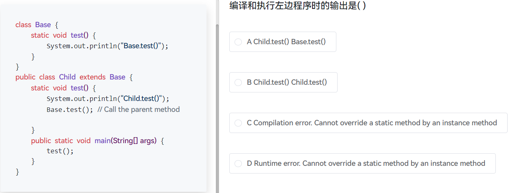实现代码高亮, 支持多种风格, 这里主要使用的是github风格的代码高亮效果
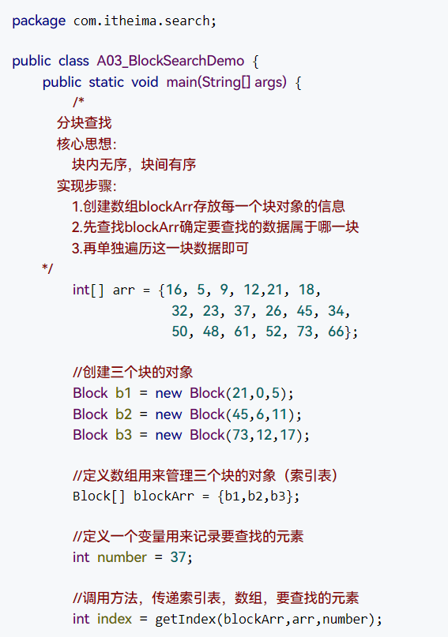GitHub风格的代码高亮
6.vue-core-video-player
vue视频播放器 样式好看
整体样式
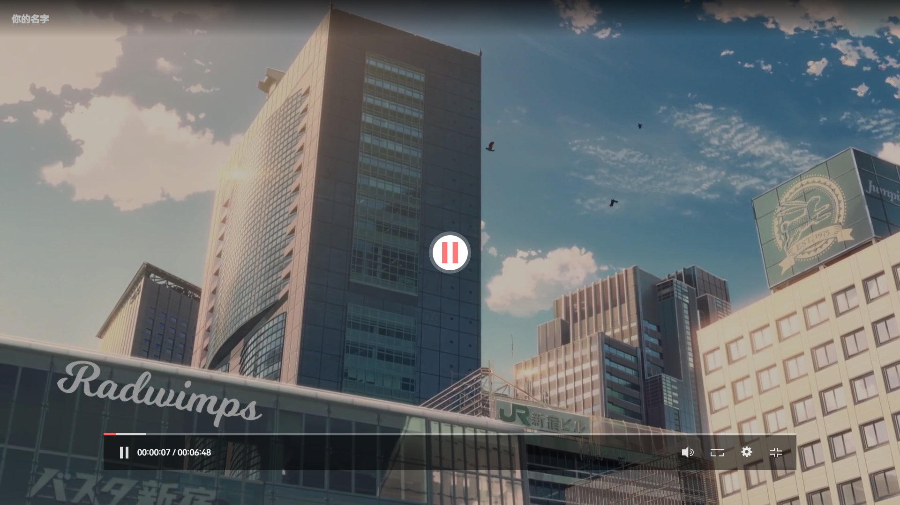
支持在最前端窗口播放
video组件(可直接复用) 详细配置:https://www.cnblogs.com/My-IronMan/p/16209251.html
vue
<template>
<div>
<vue-core-video-player :src="videoSource" :cover="cover" :title="title" loop="false"/>
</div>
</template>
<script>
export default {
name: "myVideo",
data() {
return {
videoSource: [{
// 视频播放的地址
src: 'https://media.vued.vanthink.cn/y2mate.com%20-%20sparkle_your_name_amv_K_7To_y9IAM_1080p.mp4',
// 默认1080p播放
resolution: 1080
}],
// 封面的图片
cover: "https://img1.wxzxzj.com/vpc-example-cover-your-name-c.png",
// 封面的标题
title: "你的名字"
}
},
}
</script>
2.后端设计
2.1.数据库设计
1.用户管理模块
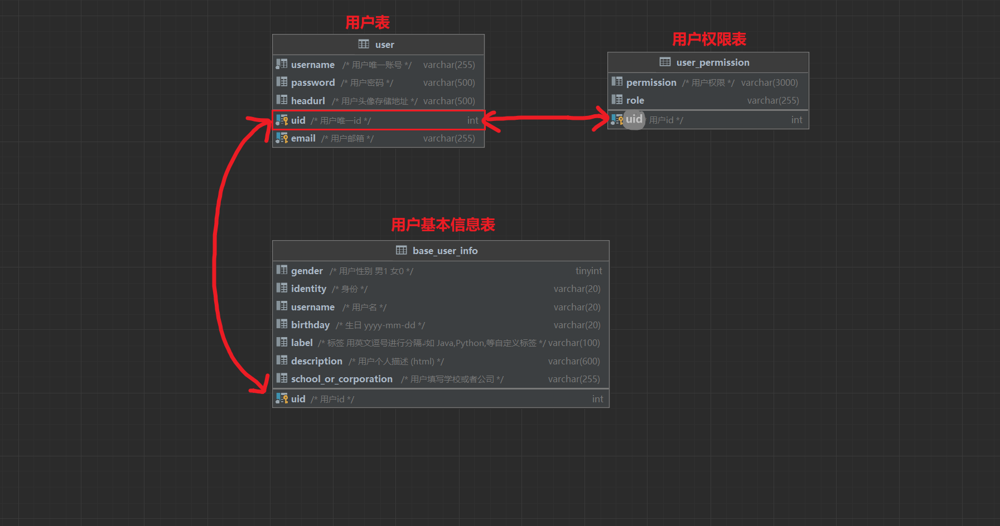2.博客模块
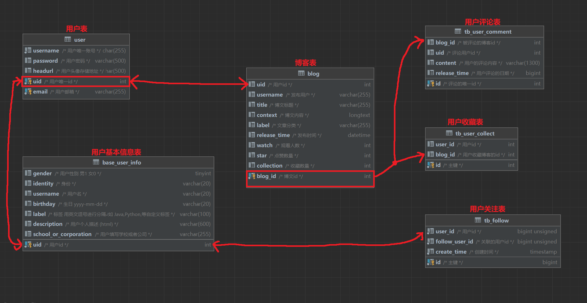3.课程学习模块
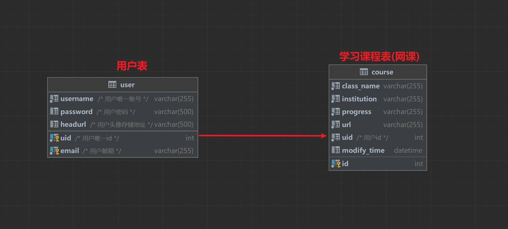4.每日刷题模块
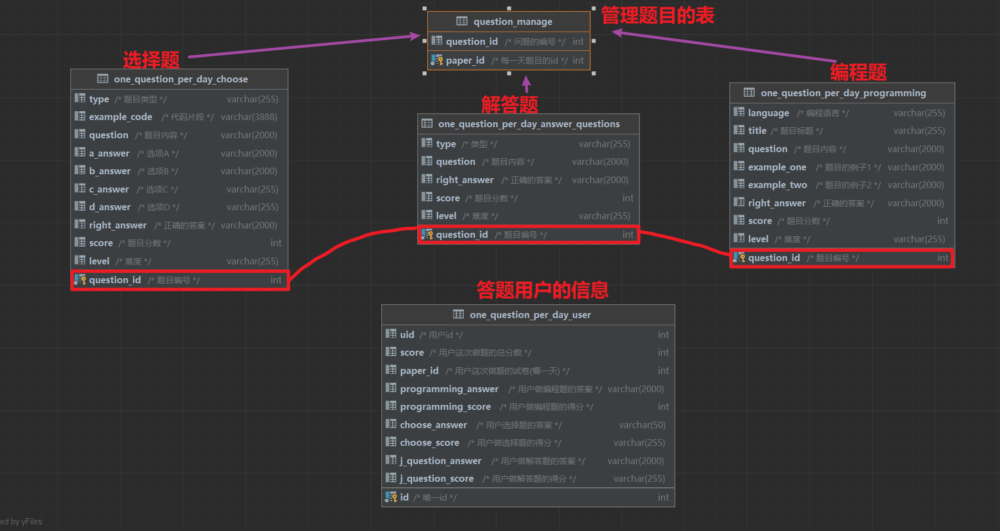2.2.统一接口规范
统一返回的json数据的格式,并规定状态码200代表成功,其他状态码均代表失败
Java
@Data // 使用Lombok注解简化开发
public class Result implements Serializable {
private Object data;
private Integer code;
private String message;
public Result(Integer code, String message, Object data) {
this.data = data;
this.code = code;
this.message = message;
}
public Result(Integer code, String message) {
this.code = code;
this.message = message;
}
public static Result ok(String msg){
return new Result(200,msg);
}
public static Result ok(Object data){
return new Result(200,"SUCCESS",data);
}
public static Result failure(String msg){
return new Result(403,msg);
}
public static Result failure(){
return new Result(403,"FAILURE");
}
public static Result ok(){
return new Result(200,null);
}
// 如果更新记录数 >0 表达更新成功
public static Result update(int count){
String msg = count > 0 ? "SUCCESS" :"FAILURE";
int code = count > 0 ? 200 : 500;
return new Result(code,msg);
}
// 如果删除记录数 >0 表达删除成功
public static Result delete(int count){
String msg = count > 0 ? "SUCCESS" :"FAILURE";
int code = count > 0 ? 200 : 500;
return new Result(code,msg);
}
}
2.3.遵循依赖倒转原则
面向接口开发所有业务层接口都对应着一个实现类，减少类间的耦合性，提高系统的稳定性，降低并行开发引起的风险，提高代码的可读性和可维护性。
2.4.全局异常处理
主要处理用户未登录的异常和全局异常(服务器内部的异常), 当服务器内部出现异常时, 会给运维人员发送邮件, 确保bug能第一时间被修复
java
@RestControllerAdvice
public class GlobalExceptionHandler {
@Autowired
private SendMailService sendMailService;
// 全局异常拦截
@ExceptionHandler
public SaResult handlerException(Exception e) {
// 给运维人员发邮件通知前来修复
MailRequest mailRequest = new MailRequest();
mailRequest.setSubject("应科博客");
mailRequest.setSendTo("1979214069@qq.com");
mailRequest.setText("服务器出现异常报错信息为: " + e.getMessage() +"原因为: "+ e.getCaus